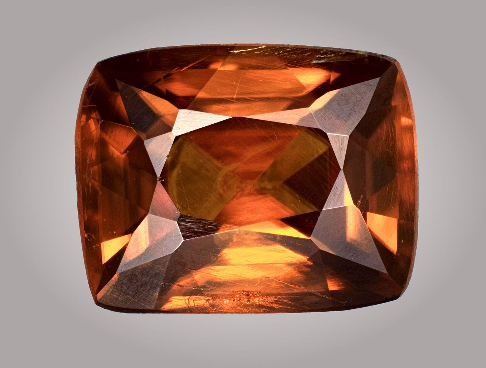
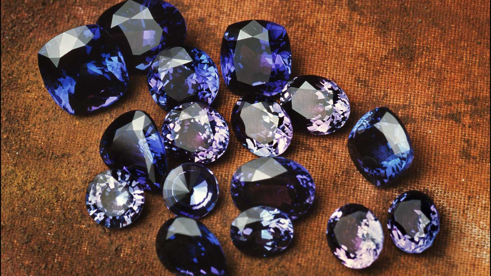
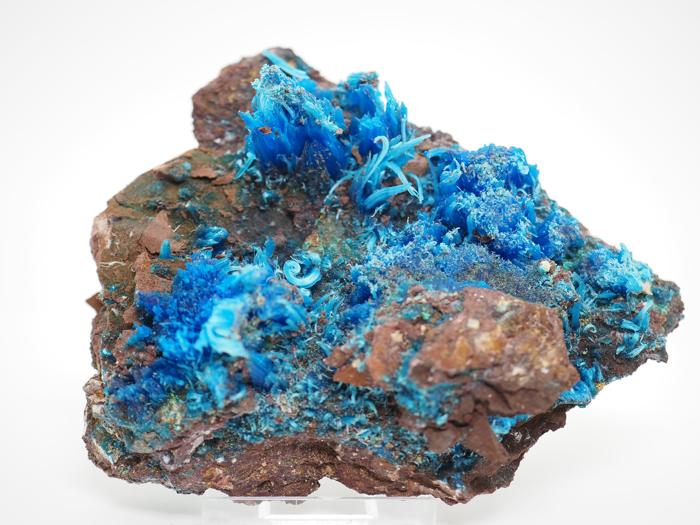
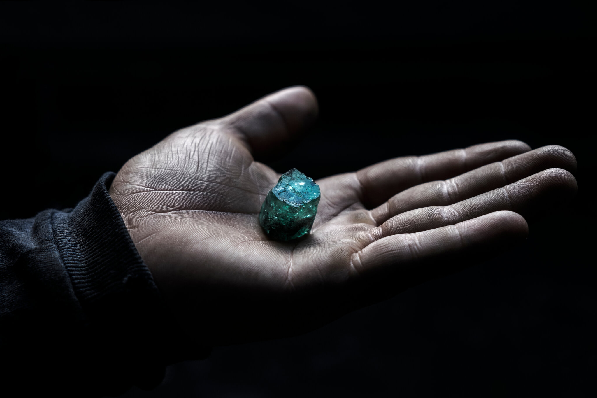
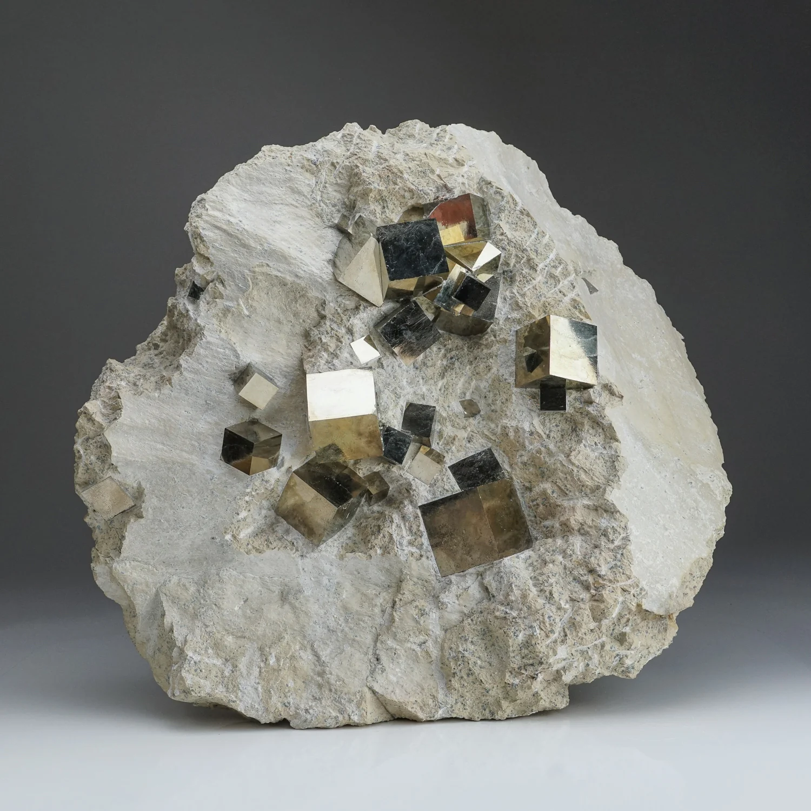

Top 5 najrjeđih minerala na Zemlji
U ovom članku saznajte koji su to najrjeđi minerali na Zemlji, gdje se pronalaze, koja su njihova fizička i kemijska svojstva i kolika je njihova cijena na tržištu. Upoznat ćete se sa definicijom minerala i uvijetima koji mineral čine rijetkim.
Autor: Bruno Hledik
30.9.2023.

Tanzanit: mineral sa jednim nalazištem, Tanzanijom
U ovom članku saznajte o tanzanitu, koja su njegova fizička i kemijska svojstva i kolika je tržišna cijena. Upoznat ćete se sa identifikacijom tanzanita.
Autor: Bruno Hledik
30.9.2023.

Top 5 najotrovnijih minerala na Zemlji
U ovom članku saznajte koji su to najotrovniji minerali na Zemlji, gdje se pronalaze, koja su njihova fizička i kemijska svojstva i kolika je njihova cijena na tržištu. Upoznat ćete se sa definicijom minerala i uvijetima koji mineral čine otrovnim.
Autor: Bruno Hledik
30.9.2023.

Smaragd: mineral iz rudnika Muzo, Kolumbija
U ovom članku saznajte o mineralu smnaragdu, gdje se pronalazi, koja su njegova fizička i kemijska svojstva i kolika je njegova tržišna cijena. Upoznat ćete se sa identifikacijom minerala smaragda i uvijetima koji mineral čine posebnim.
Autor: Bruno Hledik
30.9.2023.

Pirit: mineral iz rudnika Victoria, Španjolska
U ovom članku saznajte o mineralu piritu i njegovom najkavlitetnijem nalazištu, rudniku Viktorija. Upoznat ćete se sa definicijom minerala pirita i činjenicama koji mineral čine posebnim.
Autor: Bruno Hledik
30.9.2023.